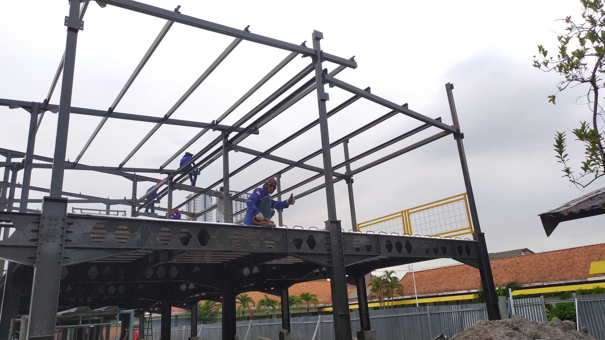

PENDIDIKAN
Pada Tahun 2017 sampai dengan 2020 saya menempuh pendidikan pada Program Jurusan MIPA (Matematika dan Ilmu Pengetahuan Alam) di SMAN 1 Widang. Selama masa SMA, saya membangun landasan logika dan pemahaman sains yang kuat, yang kemudian memicu ketertarikan saya untuk mendalami dunia rekayasa dan konstruksi. Ketertarikan tersebut saya wujudkan dengan melanjutkan studi ke jenjang pendidikan tinggi di Universitas Muhammadiyah Surabaya (UMSURA). Saya mengambil program studi Teknik Sipil dan berhasil menyelesaikan gelar Sarjana Teknik (S.T.) dalam kurun waktu empat tahun, yakni pada periode 2020 hingga 2024. Selama masa kuliah, saya tidak hanya fokus pada pemahaman teoritis mengenai struktur, hidrologi, dan manajemen konstruksi, tetapi juga aktif mengaplikasikan ilmu tersebut melalui berbagai proyek lapangan dan organisasi mahasiswa sebagai ajang upgrading diri.

PENGALAMAN
CV. Deka Jaya Sejahtera | Magang (3 Bulan) Selama menjalani masa magang di CV. Deka Jaya Sejahtera, saya bertanggung jawab dalam memastikan seluruh aspek teknis dan operasional di lapangan berjalan sesuai dengan standar yang ditetapkan. Berikut adalah rincian peran dan kontribusi saya: Supervisi Proyek Melakukan monitoring rutin dan pengecekan mendalam terhadap setiap tahapan pengerjaan proyek guna memastikan progres di lapangan selaras dengan shop drawing dan rencana kerja yang telah disepakati. Manajemen Sumber Daya Lapangan: Mengawasi efisiensi penggunaan bahan bangunan dan optimalisasi peralatan konstruksi. Saya juga memastikan bahwa metode pelaksanaan yang diterapkan oleh tenaga kerja memenuhi standar operasional (SOP) untuk meminimalisir risiko kesalahan teknis. Kendali Mutu dan Kuantitas (QA/QC): Bertanggung jawab mengawasi pelaksanaan pekerjaan dari aspek kualitas material dan hasil akhir, akurasi kuantitas volume pekerjaan, serta memantau laju pencapaian realisasi fisik dibandingkan dengan jadwal rencana (S-Curve). Pelaporan dan Dokumentasi: Mencatat setiap detail perkembangan harian serta mengidentifikasi kendala di lapangan untuk kemudian dikoordinasikan bersama tim teknis demi menjaga ketepatan waktu penyelesaian proyek.
